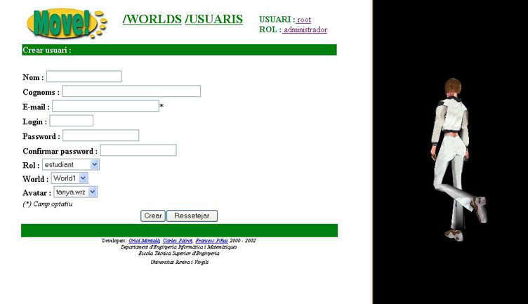

4.3 Registrar un nou usuari
Quan elegim l'opci� de registrar un nou usuari ens apareix la seg�ent pantalla:

Igualment com passava amb la pantalla de modificaci� de dades d'un usuari, aqui tamb� tenim la pantalla dividida en 2 parts:
- La part que correspon al formulari que haurem d'omplir per a crear el nou usuari.
- La part de pre-visualitzaci� de l'aparen�a que tindr� l'usuari en l'entorn 3D del MOVE!, i que correspon amb el valor actual de la casella Avatar.
Totes les caselles que apareixen en el formulari s'han d'omplir obligatoriament, excepte la que correspon al E-mail, la qual �s optativa.
El significat de cada casella ja ha estat descrit amb anterioritat dins d'aquest cap�tol.
Un cop finalitzada la introducci� de les dades, cal pr�mer el bot�  i el nou usuari passar� a formar part
de la llista d'usuaris que hi ha registrats en el MOVE!.
i el nou usuari passar� a formar part
de la llista d'usuaris que hi ha registrats en el MOVE!.